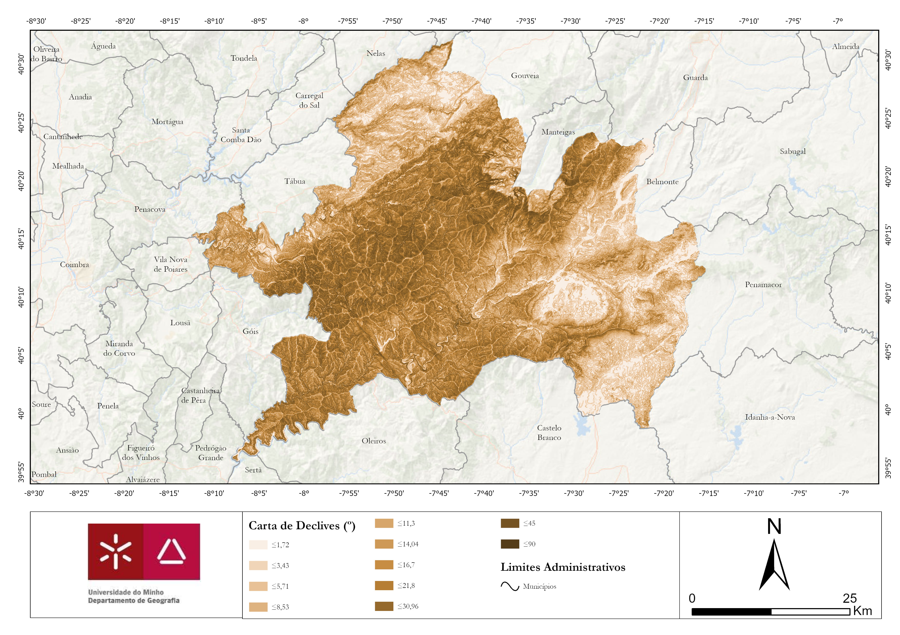
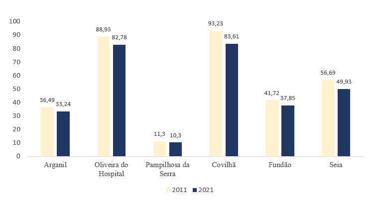

Área de Estudo
Contexto Geográfico
Caracterização Física
A área de estudo localiza-se no mais importante conjunto montanhoso português, a Cordilheira Central. A Serra do Açor tem uma altitude de 1342 metros, a Serra da Gardunha de 1227 metros e por fim a Serra da Estrela com 1993 metros.
Área Total
2,652 km²
Altitude Máx.
1,993 m
Declive Médio
14°

Enquadramento Geográfico

MDT (Altimetria)

Mapa de Declives

Tipo de Floresta
Contexto Demográfico
Dinâmica Populacional
A análise dos censos (2011-2021) para os municípios afetados revela uma tendência preocupante de decréscimo populacional. O êxodo rural resulta no abandono das terras, aumentando a carga de combustível florestal disponível.
Impacte no Risco de Incêndio
- Diminuição da população para gestão florestal.
- Aumento de áreas de mato denso sem intervenção humana.
- Acumulação de combustível vegetal.

Fonte: INE (Censos 2011/2021)
Ver Gráfico